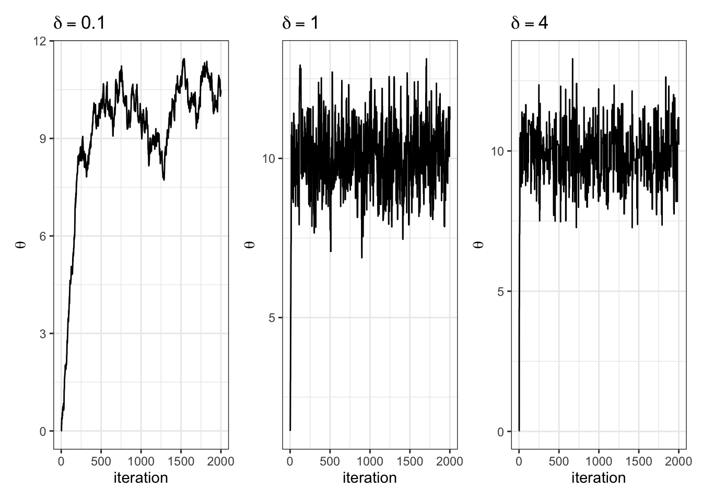

See libraries used in these notes
library(tidyverse)
library(latex2exp)
library(patchwork)
library(tidymodels)
library(mvtnorm)
library(coda)
library(animation)library(tidyverse)
library(latex2exp)
library(patchwork)
library(tidymodels)
library(mvtnorm)
library(coda)
library(animation)We setup a data generative model, \(p(y | \boldsymbol{\theta})\) where \(\boldsymbol{\theta} = \{ \theta_1, \theta_2, \ldots \theta_n\}\).
Next, we choose a prior distribution for the unknown model parameters \(p(\boldsymbol{\theta})\).
We wish to make inferences using the data we collect \(\boldsymbol{y} = \{y_1,\ldots y_n\}\). All inferences we make require the posterior \(p(\boldsymbol{\theta}| \boldsymbol{y})\), which we obtain from the data generative model and the prior via Bayes’ rule.
In general, the inferences we wish to make, e.g. \(p(g(\boldsymbol{\theta}) \in A |~\boldsymbol{y})\), are complicated or impossible to compute analytically. Here, Monte Carlo approximation helps. The key idea is that we sample from the posterior and then use the samples an an empirical approximation to make inference.
Question: What do we do when we can’t sample directly from the posterior?
Idea: the number of fledglings a sparrow has in a mating season depends on the age of the sparrow.
Let \(Y\) be the number of fledglings (offspring) of a sparrow.
Let \(X\) be the age of the sparrow.
Let \(Y|X\) be conditionally iid.
Write down a data generative model for the data.
\[ Y | X \sim Poisson(\theta_x) \]
where \(\theta_x\) is the age-specific expected number of off-spring. Note that \(Y \in \{0, 1, 2, \ldots\}\).
How can we specify \(\theta_x\)?
Let each \(\theta_i\) be unique and specific to age \(i\) of the sparrow.
Problem: if we don’t collect much data on sparrows of a certain age \(i\), then our estimates for \(\theta_i\) will be poor.
Let \(\theta_x = f(x) = \beta_1 + \beta_2 x + \beta_3 x^2\).
Here we have a way of relating ages to the expected number of fledglings and admit an \(x^2\) term to model the fact that the relationship between number of fledglings and age may not be a linear function of age.
Problem: \(\theta_x\) must be positive! The equation above can evaluate to negative values.
Log-transform!
\(\log \mathbb{E}~Y|X = \log \theta_x = \beta_1 + \beta_2 x + \beta_3 x^2\)
In other words,
\(\theta_x = e^{\beta_1 + \beta_2x + \beta_3 x^2}\) > 0
Some terminology that will be useful in the future: \(Y|X \sim Poisson(e^{\beta^T \mathbf{x}})\) is “Poisson regression”. Where \(\beta^T \mathbf{x} = \beta_1 + \beta_2 x + \beta_2 x^2\).
\(\beta^T \mathbf{x}\) is called the “linear predictor”.
Write down \(p(y_1,\ldots y_n | x_1, \ldots, x_n, \beta_1, \beta_2, \beta_3)\).
\[ \begin{aligned} p(y_1,\ldots y_n | x_1, \ldots, x_n, \beta_1, \beta_2, \beta_3) &= \prod_{i = 1}^n p(y_i|x_i, \beta_1, \beta_2, \beta_3) \text{ by conditionally iid}\\ &= \prod_{i=1}^n \theta_{x_i}^{y_i} e^{- \theta_{x_i}}\frac{1}{y_i!}\\ &= \prod_{i=1}^n e^{(\beta^T \mathbf{x}_i) y_i - e^{(\beta^T \mathbf{x}_i)}} \frac{1}{y_i!}\\ &= e^{\sum_{i=1}^n \left[(\beta^T \mathbf{x}_i) y_i - e^{(\beta^T \mathbf{x}_i)} \right]} \cdot \prod_{i=1}^n \frac{1}{y_i!} \end{aligned} \]
What’s unknown?
\[ \beta_1, \beta_2, \beta_3 \]
Write down a prior distribution for the unknowns
One possible prior: independent normals on each \(\beta_i\).
\[ \begin{aligned} \beta_i &\sim N(0, 10)\\ p(\beta_1, \beta_2, \beta_3) &= \text{dnorm}(\beta_1; 0, \sqrt{10}) \cdot \text{dnorm}(\beta_2; 0, \sqrt{10}) \cdot \text{dnorm}(\beta_3; 0, \sqrt{10}) \end{aligned} \]
The posterior, given by
\[ p(\beta_1, \beta_2, \beta_3 | y_1,\ldots, y_n, x_1,\ldots, x_n) = \frac{p(\beta_1, \beta_2,\beta_3) p(y_1,\ldots y_n | x_1, \ldots, x_n, \beta_1, \beta_2, \beta_3)}{ \int \int \int p(\beta_1, \beta_2,\beta_3) p(y_1,\ldots y_n | x_1, \ldots, x_n, \beta_1, \beta_2, \beta_3)~d\beta_1 d\beta_2 d\beta_3 } \]
is too complicated to write down a closed form expression for due to the denominator “\(p(y)\)”.
Our goal: generate a series of dependent samples from the posterior as an empirical approximation to make inference.
The Metropolis algorithm is one of many methods (but not the only method) to construct a Markov chain comprised of dependent samples from the target distribution.
More broadly, constructing a Markov chain of dependent samples and using these samples to approximate the target distribution is called Markov chain Monte Carlo (MCMC).
Definition: a sequence of random variables \(\theta^{(1)}, \theta^{(2)}, \theta^{(3)}, \ldots\) satisfying the “Markov property”.
\[ p(\theta^{(s+1)}| \theta^{(1)}, \theta^{(2)}, \ldots, \theta^{(s)}) = p(\theta^{(s+1)}| \theta^{(s)}) \]
For all states \(s\).
This is also called the “memoryless property”. In other words, “What happens next depends only on the state of affairs now”.
set.seed(360)
S = 10
theta_s = 0 # starting point for the Markov chain
THETA = NULL
for(i in 1:S) {
THETA = c(THETA, theta_s)
theta_s = rnorm(1, theta_s, 3)
}
THETA [1] 0.0000000 4.3124838 5.2802035 4.6673136 1.6700287 1.5575283
[7] -0.6967649 -2.6485497 -3.1040911 -5.6181892MCMC sampling algorithms are not models. They do not generate more information than is in the data and the prior. They are simply ways of “looking at” the posterior.
| \(\theta\) | Vector of unknown parameters. |
| \(\theta^{(s)}\) | Current state of \(\theta\) in the Markov chain. |
| \(J(\theta | \theta^{(s)})\) | Proposal distribution. Note: for this to be a “Metropolis algorithm”, J needs to be symmetric, i.e. \(J(\theta_a | \theta_b) = J(\theta_b | \theta_a)\) for all \(\{\theta_a, \theta_b\}\). |
| \(\pi(\theta)\) | Target distribution that we wish to sample from (in our cases, this is the posterior \(p(\theta | y_1,\ldots, y_n)\)). |
The Metropolis algorithm proceeds:
Our target distribution, \(\pi(\theta)\), is the posterior \(p(\theta | y_1,\ldots, y_n)\). So the acceptance ratio in the algorithm is a ratio of posteriors.
When we evaluate the ratio of posteriors at different \(\theta\), the high dimensional integral in the denominator of the posterior, \(p(y_1,\ldots,y_n)\), cancels out! We don’t have to compute it!
The fledglings of female song sparrows. To begin, let’s load the data.
yX = structure(c(3, 1, 1, 2, 0, 0, 6, 3, 4, 2, 1, 6, 2, 3, 3, 4, 7,
2, 2, 1, 1, 3, 5, 5, 0, 2, 1, 2, 6, 6, 2, 2, 0, 2, 4, 1, 2, 5,
1, 2, 1, 0, 0, 2, 4, 2, 2, 2, 2, 0, 3, 2, 1, 1, 1, 1, 1, 1, 1,
1, 1, 1, 1, 1, 1, 1, 1, 1, 1, 1, 1, 1, 1, 1, 1, 1, 1, 1, 1, 1,
1, 1, 1, 1, 1, 1, 1, 1, 1, 1, 1, 1, 1, 1, 1, 1, 1, 1, 1, 1, 1,
1, 1, 1, 3, 3, 1, 1, 1, 1, 1, 1, 1, 1, 2, 2, 2, 2, 2, 2, 2, 2,
2, 5, 5, 4, 4, 4, 4, 4, 4, 4, 4, 4, 4, 4, 4, 5, 4, 4, 4, 4, 5,
5, 5, 5, 3, 3, 3, 3, 3, 3, 3, 6, 1, 1, 9, 9, 1, 1, 1, 1, 1, 1,
1, 1, 4, 4, 4, 4, 4, 4, 4, 4, 4, 25, 25, 16, 16, 16, 16, 16,
16, 16, 16, 16, 16, 16, 16, 25, 16, 16, 16, 16, 25, 25, 25, 25,
9, 9, 9, 9, 9, 9, 9, 36, 1, 1), .Dim = c(52L, 4L), .Dimnames = list(
NULL, c("fledged", "intercept", "age", "age2")))yX %>%
head(n = 5) fledged intercept age age2
[1,] 3 1 3 9
[2,] 1 1 3 9
[3,] 1 1 1 1
[4,] 2 1 1 1
[5,] 0 1 1 1y = yX[,1]
X = yX[,-1]The model:
\[ \begin{aligned} Y | X &\sim \text{Poisson}(\exp[ \beta^T \boldsymbol{x}])\\ \beta &\sim MVN(0, \sqrt{10}) \end{aligned} \]
The Metropolis algorithm with
\[ J(\beta | \beta^{(s)}) = MVN(\beta^{(s)}, \hat{\sigma}^2(X^TX)^{-1}) \]
where \(\hat{\sigma}^2\) is the sample variance of \(\{\log(y_1 + 1/2), \ldots, \log(y_n + 1/2)\}\).
set.seed(360)
n = length(y)
p = ncol(X)
pmn.beta = rep(0, p) # prior mean beta
psd.beta = rep(10, p) # prior sd beta
var.prop = var(log(y + 1/2)) * solve(t(X) %*% X) # proposal variance
S = 10000
beta = rep(0, p); accepts = 0
BETA = matrix(0, nrow = S, ncol = p)
set.seed(1)
for (s in 1:S) {
# multivariate proposal of beta
beta.p = t(rmvnorm(1, beta, var.prop))
# log ratio
lhr = sum(dpois(y, exp(X %*%beta.p), log = TRUE)) -
sum(dpois(y, exp(X %*% beta), log = TRUE)) +
sum(dnorm(beta.p, pmn.beta, psd.beta, log = TRUE)) -
sum(dnorm(beta, pmn.beta, psd.beta, log = TRUE))
if (log(runif(1)) < lhr) {
beta = beta.p ; accepts = accepts + 1
}
BETA[s,] = beta
}The acceptance ratio is 0.428
Let’s examine convergence.

value = c(BETA[,1], BETA[,2], BETA[,3])
n = length(value)
beta = c(rep("beta1", n/3), rep("beta2", n/3), rep("beta3", n/3))
df = data.frame(value = value,
beta = beta)
df %>%
ggplot(aes(x = 1:nrow(df), y = value)) +
geom_line() +
facet_wrap(~ beta, scales = "free_x") +
theme_bw() +
labs(x = "iteration")# effective sample size
BETA %>%
apply(2, effectiveSize)[1] 867.4750 825.6214 692.0495par(mfrow=c(1,3))
acf(BETA[,1])
acf(BETA[,2])
acf(BETA[,3])
Let \(\pi(\theta) = \text{dnorm}(\theta, 10, 1)\) and let \(J(\theta | \theta^{(s)}) = \text{normal}(\theta^{(s)},\delta^2)\).
We have to choose \(\delta\). How should we choose it? Let’s gain some intuition by trying out three different values of \(\delta\).
set.seed(360)
theta_s = 0 # starting point
THETA = NULL # empty object to save iterations in
S = 10000 # number of iterations
delta = 1 # proposal sd
accept = 0 # keep track of acceptance rate
for (s in 1:S) {
# log everything for numerical stability #
### generate proposal and compute ratio r ###
theta_proposal = rnorm(1, mean = theta_s, sd = delta)
log.r = dnorm(theta_proposal, mean = 10, sd = 1, log = TRUE) -
dnorm(theta_s, mean = 10, sd = 1, log = TRUE)
### accept or reject proposal and add to chain ###
if(log(runif(1)) < log.r) {
theta_s = theta_proposal
accept = accept + 1
}
THETA = c(THETA, theta_s)
}Let’s look at how various \(\delta\) let us sample the target:


Let’s look at the trace plots for each \(\delta\).

| 0.1 | 1 | 4 |
|---|---|---|
| 0.96 | 0.7 | 0.29 |